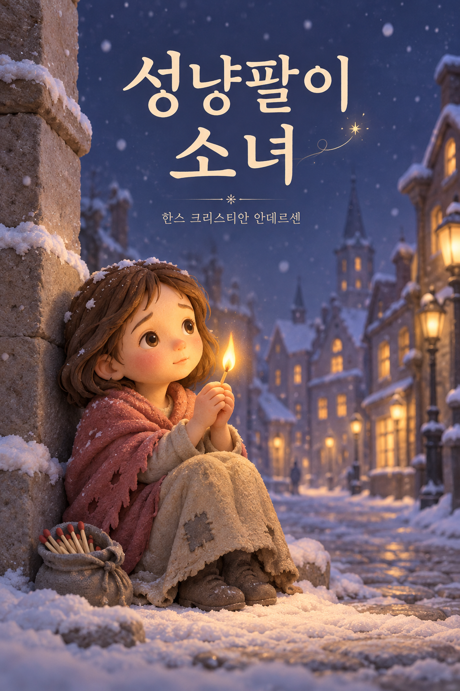
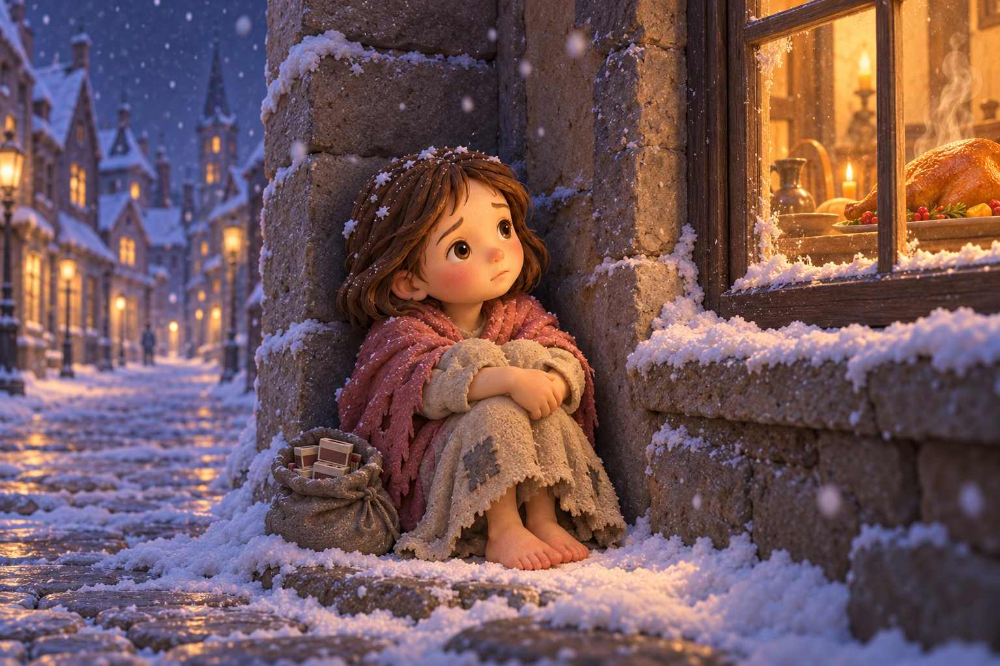

표지

표지

지독히도 추운 날이었다. 눈이 내리고 어둠이 찾아왔다. 그해의 마지막 저녁이었다. 한 가엾은 소녀가 모자도 쓰지 않고 맨발로 춥고 우울하게 거리를 걷고 있다.
물론 집을 나설 때 신발을 신고 있었지만 지금은 아무 소용이 없었다. 신발은 엄마의 것이었기에 소녀에게 너무 컸다.
어린 소녀는 길을 뛰어 건너다가 신발 한 짝을 잃어버렸는데 마차 두 대가 덜컹거리며 엄청나게 빨리 지나가는 바람에 신발을 다시 찾을 수 없었다. 한 소년이 나중에 아이를 낳으면 요람으로 쓰겠다면서 나머지 한 짝을 가지고 달아나버렸다. 그래서 어린 소녀는 맨발로 걷고 있었다. 두 발은 꽁꽁 얼어 울긋불긋했다.
낡은 앞치마에 들고 가는 성냥갑 몇 개가 있었다. 소녀는 성냥 하나를 손으로 들어 내밀었다. 하지만 하루 종일 소녀한테 성냥을 사려는 사람은 아무도 없었다. 단 한 사람도 1센트를 주지 않았다.
추위와 배고픔으로 벌벌 떨면서 소녀는 기어갔다. 비참한 그림이다, 가엾은 소녀!
1

눈꽃이 소녀의 긴 머리카락 위로 떨어져 내려 목을 구불구불 휘감았다. 창문으로 불빛이 새어 나오고 거위를 굽는 근사한 냄새도 흘러나왔다. 한 해의 마지막 날이었다. 그렇다, 소녀는 그 생각이 간절했다!
집 두 채 사이 모퉁이에 다른 집보다 길 쪽으로 더 튀어나온 곳이 있었는데 소녀는 그곳에 앉아서 발을 끌어당겨 몸을 웅크렸다. 점점 더 몸이 추웠다. 하지만 집에 갈 엄두가 나지 않았다. 성냥을 팔지 못했기에, 1센트도 벌지 못했기에 아버지는 분명 이 소녀를 흠씬 두들겨 팰 것이다.
게다가 집은 너무 추웠다. 지붕 말고는 불어대는 바람을 가릴 게 없었다. 제일 크게 갈라진 틈을 지푸라기와 천 조각으로 막았는데도 그랬다.
2

손은 동상을 입은 듯 거의 움직일 수도 없었다. 작은 성냥 하나가 온기를 어느 정도 더해줄지도 몰랐다! 소녀가 성냥갑에서 성냥 하나를 꺼내 벽에 그어서 손을 따뜻하게 할 수만 있다면…….
소녀는 하나를 꺼냈다. 치지직! 성냥은 탁 소리를 내며 타올랐다! 온기를 주며 작은 초처럼 환한 불꽃을 일으켰다. 소녀가 그 불꽃 위로 손을 올리자, 이상한 빛이 일었다!
정말이지 반짝반짝 빛나는 황동 손잡이와 뚜껑이 달린 거대한 쇠 난로 앞에 자신이 앉아 있는 것 같았다. 불이 얼마나 멋지게 타오르는지! 얼마나 편안한지! 소녀가 발도 녹이려 발을 내밀었다.
문득 작은 불꽃이 꺼지고 난로는 사라졌다. 손안에는 다 타버린 성냥만 남아 있었다.
3

성냥 하나를 더 밝혔다. 문득 소녀가 몹시도 아름다운 크리스마스트리 아래 앉아 있다. 작년 크리스마스에 부자 상인의 집 유리문을 통해 본 것보다 훨씬 더 아름다웠다. 수천 개의 초가 초록 나뭇가지 위에서 활활 타오르고 판화 가게에 있는 것과 같은 알록달록한 그림이 소녀를 내려다보았다. 어린 소녀는 두 손을 내밀었다. 문득 성냥이 꺼졌다.
크리스마스 불빛은 더 높이 올라갔다. 불빛은 이제 하늘에 환한 별처럼 보였다. 별 하나가 길게 줄을 이루며 떨어져 내렸다. 소녀는 생각했다.
‘지금 누군가가 저세상으로 가고 있구나.’
지금은 저세상으로 간, 누구보다 소녀를 사랑했던 할머니는 별이 떨어져 내리면 영혼 하나가 하늘로 올라간 것이라고 말해 주었다.
4

성냥을 하나 더 벽에 그었다. 다시 환하게 불꽃이 일었다. 그 불꽃 속에 할머니가 친절하고도 사랑스럽게, 맑고 환하게 빛을 내며 서 있었다. 소녀가 외쳤다.
“할머니! 아, 저를 데려가 주세요! 성냥이 꺼지면 할머니가 사라지리란 걸 알아요. 할머니는 따뜻한 난로처럼 사라질 거예요. 저 맛있는 거위와 아름다운 크리스마스트리처럼요!”
소녀는 할머니와 함께 있고 싶었기에 재빨리 성냥 꾸러미를 모두 밝혔다. 성냥이 무척이나 환하게 빛나서 낮보다 더 밝아졌다. 할머니가 그렇게나 웅장하고 아름다운 적이 없었다. 할머니가 소녀를 품에 안았다. 두 사람은 땅 위로 밝고도 경쾌하게 날아올랐다. 아주, 아주 높이. 저 위 추위도 배고픔도, 두려움도 없는 곳으로……. 두 사람은 하느님과 함께 있었다.
5
하지만 모퉁이에서, 미소 짓는 입술에 붉은 뺨의 어린 소녀가 벽에 기대어 앉아 묵은 해의 마지막 밤에 얼어 죽었다. 새해의 태양이 측은한 한 사람의 모습 위로 떠올랐다. 소녀는 그곳에 얼어 뻣뻣하게 앉아있었다,
거의 다 타버린 성냥 꾸러미를 움켜쥔 채로…….
6